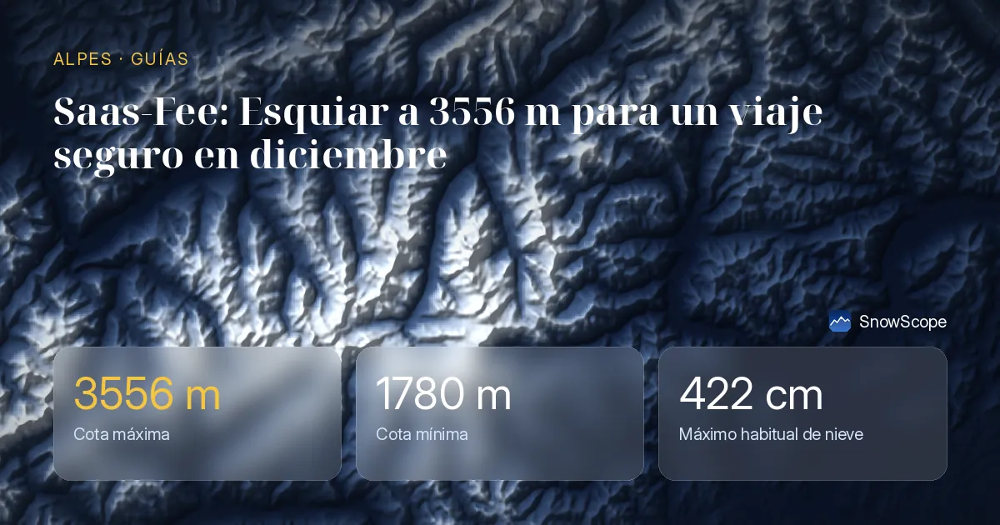

Saas-Fee: Esquiar a 3556 m para un viaje seguro en diciembre
Saas-Fee tiene el 100 % de los inviernos pasados con al menos 30 cm de nieve en la cima a mediados de diciembre. Si buscas un viaje donde la nieve sea segura, tienes que mirar la altura de los remontes. Esta estación llega a 3556 m, que es uno de los puntos más altos donde puedes esquiar en Suiza.
Consulta la previsión de nieve en tiempo real de Saas-Fee en la app SnowScopeEspesor de nieve, alertas de nieve polvo y mapa 3D, gratis.
Una escalera de alturas desde el pueblo hasta la cima
La zona de esquí en Saas-Fee está construida como una escalera que sube muy alto en el aire frío. El remonte más bajo empieza a 1780 m en el pueblo, y el remonte más alto llega a 3556 m. Esto le da a la estación un desnivel total de 1776 m. Hay 30 remontes en total y la zona de esquí tiene 48 km de pistas. Como la estación es tan alta, los espesores de nieve cambian mucho a medida que subes.
En la base de los remontes, el espesor habitual en diciembre es de 34 cm. Si subes a media montaña a 2668 m, ese espesor habitual aumenta a 68 cm. En la cima, el espesor habitual para diciembre es de 159 cm. En un diciembre con mucha nieve, la cima puede tener hasta 254 cm, mientras que incluso un diciembre escaso suele tener 69 cm a esa altura. Este rango vertical es la razón principal por la que la estación permanece abierta cuando lugares más bajos podrían tener dificultades.

Semanas de diciembre y probabilidad de nieve
Nuestro historial de 46 inviernos pasados muestra que el momento de tu viaje importa para las pistas más bajas. Durante la primera semana de diciembre, del 1 al 7 de diciembre, solo el 33 % de los inviernos pasados tenían 30 cm o más de nieve en la base. Este número sube a 5 inviernos de cada 10 para la segunda semana. Para finales de mes, del 22 al 28 de diciembre, la probabilidad de tener 30 cm en la base es del 85 %.
Si miras a media montaña a 2668 m, los números son mucho más estables. En la primera semana del mes, 8 inviernos de cada 10 tienen al menos 30 cm de nieve. Esto aumenta a unos 9 inviernos de cada 10 para la segunda semana. En la cima de los remontes, la nieve está casi garantizada. A partir del 8-14 de diciembre, el 100 % de los inviernos pasados en nuestros registros tenían al menos 30 cm de nieve a 3556 m.
Precios de los forfaits en francos suizos
Revisamos los costes en el sitio oficial para la temporada de invierno 2026-27. Un forfait de adulto de 1 día para Saas-Fee y Saas-Almagell cuesta CHF 86. Si planeas una estancia más larga, un forfait de adulto de 6 días cuesta CHF 419. Estos precios son para esquiadores de 20 años en adelante.
Estos precios reflejan la gran altitud y el sistema de remontes ofrecido. Aunque Suiza a menudo se ve como cara, estos precios oficiales están fijados para toda la temporada de invierno. Es importante reservar a través del sitio oficial para obtener estas tarifas específicas para el invierno 2026-27.
Saas-Fee o Grimentz-Zinal
Cuando miras otras opciones en la región del Valais, Grimentz-Zinal es una alternativa fuerte. Los precios allí son más bajos, con un forfait de adulto de 1 día Val d'Anniviers costando CHF 75,00 y un forfait de 6 días costando CHF 339,00. Grimentz-Zinal también tiene una zona de esquí más grande con 71 km de pistas y 23 remontes.
Sin embargo, la diferencia de altura es significativa. El remonte más alto en Grimentz-Zinal está a 2873 m, que es más bajo que el punto de media montaña de Saas-Fee. En un diciembre habitual, la cima de Grimentz-Zinal tiene 99 cm de nieve, mientras que Saas-Fee tiene 159 cm en su cima. Si sigues el frío, la altura extra en Saas-Fee ofrece más seguridad de nieve. El espesor habitual el 15 de diciembre en la base de Grimentz-Zinal es de 29 cm, comparado con 34 cm en Saas-Fee.
Un chequeo a largo plazo sobre las tendencias de nieve
En nuestro historial de 46 inviernos pasados, podemos ver cómo han cambiado los promedios. En la cima de los remontes, el promedio de diciembre era de 166 cm durante los primeros 15 inviernos desde 1980-81 hasta 1994-95. En los últimos 15 inviernos desde 2011-12 hasta 2025-26, este promedio fue de 139 cm. A media montaña, el promedio bajó de 70 cm a 63 cm. Curiosamente, la base se ha mantenido en 32 cm en ambos periodos.
Mirando la temporada actual, la nieve ahora el 13 de noviembre de 2026 es de 0 cm en la base y 27 cm en la cima. El pronóstico para los próximos 7 días es prometedor, con 34 cm de nieve nueva esperados en la base y 80 cm en la cima. La perspectiva de dos semanas para media montaña y arriba muestra un rango de 35 cm a 70 cm de nieve nueva. Esto muestra lo rápido que puede cambiar la montaña a medida que entramos en diciembre.
Consejos para esquiadores
- Quédate por encima de la altura de media montaña de 2668 m para las condiciones de nieve más seguras a principios de diciembre.
- Reserva tu viaje para la semana del 22-28 de diciembre si quieres una probabilidad del 85 % de al menos 30 cm de nieve a nivel del pueblo.
- Revisa el boletín de aludes antes de considerar cualquier esquí fuera de pista, especialmente a grandes altitudes.
- Compra el forfait de 6 días Saas-Fee y Saas-Almagell por CHF 419 en el sitio oficial para el mejor valor.
Más mapas (sitios externos)
Referencias y créditos
- Saas-Fee/Saastal, official ski pass prices 2026-27 www.saas-fee.ch/en/winter-in-the-saas-valley/ski-pass-prices/saas-fee
- Val d'Anniviers tourism, official ski pass prices 2026-27 www.valdanniviers.ch/fr/Z33617/tarifs-ski-grimentz-zinal
- SnowScope, December snow at three heights and today's snow map snowscope.app/
Sobre estas cifras
Cifras de nieve: histórico de nieve de SnowScope, 46 inviernos pasados (1980-81 a 2025-26) a tres alturas de cada estación (un modelo del pasado corregido por altitud: una estimación para una zona, no mediciones de la estación); cifras de diciembre calculadas con los espesores diarios de esos inviernos. Nieve actual y tendencia a dos semanas: previsiones de SnowScope (tendencia de ECMWF y GFS, un rango, no una promesa). Remontes y pistas: cartografía de OpenSkiMap. Precios: las páginas oficiales de abajo, consultadas el 2026-11-13; los precios pueden cambiar, compruébalos antes de reservar.
Boletines oficiales de aludes: SLF – WSL Institute for Snow and Avalanche Research
Citar este informe
Para investigación, docencia o prensa: cifras y gráficos reutilizables libremente bajo CC BY 4.0 con esta cita.
SnowScope (2026), Saas-Fee: Esquiar a 3556 m para un viaje seguro en diciembre, https://snowscope.app/blog/es/2026/11/saas-fee-december-ski-value-high-altitude-2026.html, consultado el 2026-11-14
SnowScope (Atlas Labs). (2026, November 14). Saas-Fee: Esquiar a 3556 m para un viaje seguro en diciembre. SnowScope snow reports. https://snowscope.app/blog/es/2026/11/saas-fee-december-ski-value-high-altitude-2026.html
BibTeX
@misc{snowscope2026saasfeedecemberskivalueh,
author = {{SnowScope (Atlas Labs)}},
title = {Saas-Fee: Esquiar a 3556 m para un viaje seguro en diciembre},
year = {2026},
month = nov,
howpublished = {\url{https://snowscope.app/blog/es/2026/11/saas-fee-december-ski-value-high-altitude-2026.html}},
note = {Published 2026-11-14 13:29 UTC; accessed 2026-11-14}
}· CC BY 4.0 · Métodos, datos y herramientas →
Saas-Fee: nieve y temperatura según la altura, este invierno vs el pasado (herramientas) →
Sigue Saas-Fee
Gratis: un aviso cuando llega la nieve y la previsión cada mañana.